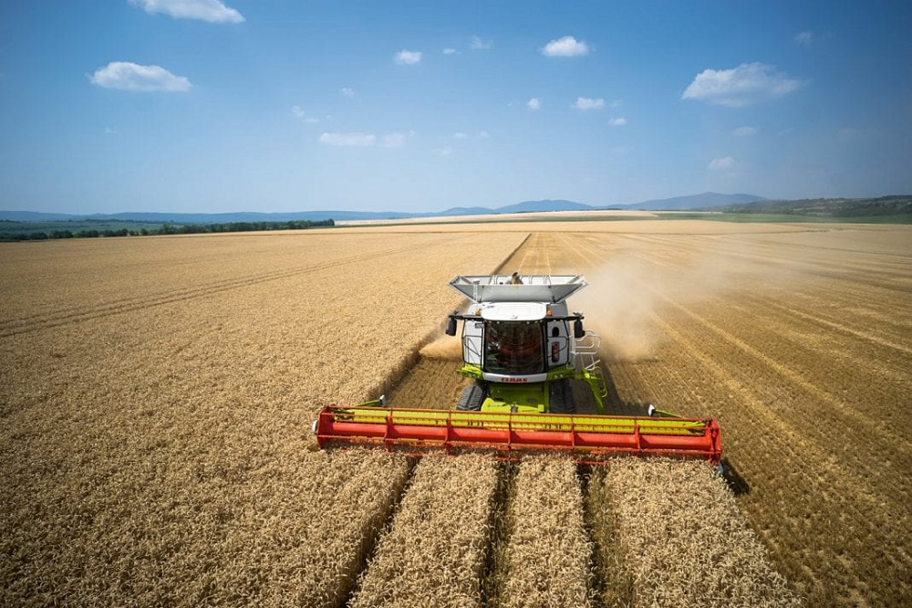

Warunki glebowo – siedliskowe Polski dają możliwość zaspokojenia potrzeb uprawy tego gatunku na ziarno konsumpcyjne
(ogólny szacowany plon wynosi 4,5 mln ton rocznie) i paszowe. Niestety warunki klimatyczne naszego kraju nie
sprzyjają produkcji zbóż jakościowych, w tym pszenicy twardej (Triticum durum). Dlatego eksport pszenicy nadal
przewyższa 500 tys. ton rocznie. Na rynku dostępne jest szereg odmian pszenicy różniących się pomiędzy sobą
wartością technologiczną ziarna, która warunkuje przydatność do produkcji mąki o możliwie dużym wyciągu.
Wiąże się to z produkcją dobrego pieczywa.
